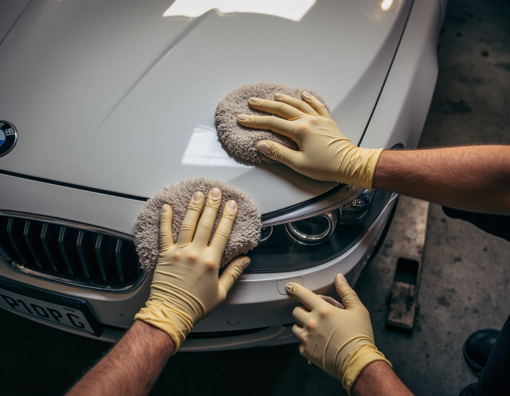
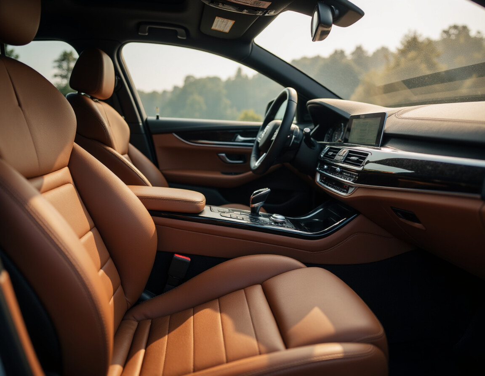
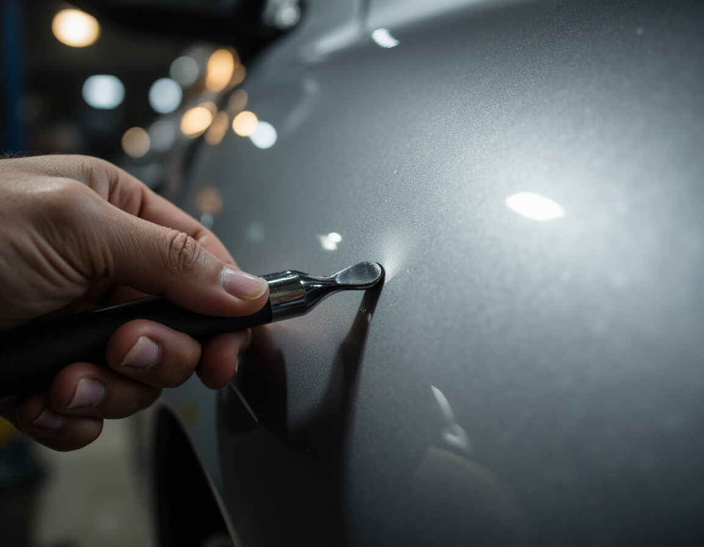

Jedes Fahrzeug verdient individuelle Pflege. Wir bieten das komplette Programm, von der Außenwäsche bis zur Dellenreparatur.

Ihr Fahrzeug wird von Hand gewaschen, entfettet und poliert. Wir entfernen Kratzer, Swirls und Oxidation, bevor wir den Lack mit einer hochwertigen Versiegelung oder Keramikbeschichtung schützen.
Das Ergebnis: tiefer Glanz, langanhaltender Schutz und ein Fahrzeug, das aussieht wie frisch vom Werk.

Von der Tiefenreinigung verschmutzter Polster bis zur vollständigen Restaurierung gerissener Ledersitze. Wir bringen den Innenraum Ihres Fahrzeugs zurück in einen Zustand, der Sie begeistern wird.
Besonders bei Gebrauchtwagen oder Oldtimern zeigt sich, was professionelle Innenraumaufbereitung ausmachen kann: Risse werden repariert, Flecken entfernt, und der gesamte Innenraum riecht wieder frisch.

Kleine Dellen und Hagelschäden müssen nicht teuer und aufwändig repariert werden. Mit der Paintless Dent Repair Technik (PDR) entfernen wir Beulen, ohne den Originallack zu beschädigen.
Das Ergebnis: eine glatte Oberfläche, kein Nachlackieren, kein Wertverlust. Die Technik eignet sich besonders für Hagelschäden, Parkrempler und kleine Dellen an Türen oder Dach.

Sie haben keine Zeit, Ihr Fahrzeug vorbeizubringen? Kein Problem. Wir holen Ihr Auto direkt bei Ihnen zu Hause oder am Arbeitsplatz ab und bringen es fertig aufbereitet zurück.
Der Service ist bequem, zuverlässig und wird mit unserem eigenen Anhänger durchgeführt, damit Ihr Fahrzeug sicher transportiert wird. So sparen Sie Zeit und genießen trotzdem erstklassige Ergebnisse.
Die Dauer hängt vom Umfang der Arbeiten und dem Zustand Ihres Fahrzeugs ab. Eine reine Aussenpflege mit Handwäsche und Politur dauert etwa 3 bis 5 Stunden. Eine komplette Aufbereitung mit Innenraum und Aussenbereich kann einen ganzen Tag in Anspruch nehmen. Wir nehmen uns für jedes Fahrzeug die Zeit, die es braucht.
Die Kosten richten sich nach dem Fahrzeugtyp, dem aktuellen Zustand und den gewünschten Leistungen. Da jedes Fahrzeug anders ist, erstellen wir Ihnen nach einem kurzen Gespräch ein individuelles Angebot. Rufen Sie uns einfach an unter 0176 296 764 68.
PDR steht für Paintless Dent Repair, also die lackschonende Dellenentfernung. Mit speziellen Werkzeugen werden Dellen von der Rückseite des Blechs vorsichtig herausgedrückt, ohne den Originallack zu beschädigen. Die Technik eignet sich besonders für Hagelschäden, Parkrempler und kleinere Beulen. Das Ergebnis: eine glatte Oberfläche, kein Nachlackieren und kein Wertverlust Ihres Fahrzeugs.
Ja, wir holen Ihr Fahrzeug direkt bei Ihnen zu Hause oder am Arbeitsplatz ab und bringen es nach der Aufbereitung wieder zurück. Der Transport erfolgt sicher auf unserem eigenen Anhänger. Der Service ist in der Region Mosel und Umgebung verfügbar.
Wir arbeiten an allen Fahrzeugtypen: Limousinen, SUVs, Sportwagen, Oldtimer, Geländewagen und Transporter. Ob Ihr Auto drei Monate oder dreissig Jahre alt ist, wir bringen es in Bestzustand. Besonders bei Oldtimern und Liebhaberfahrzeugen zeigt sich, was professionelle Aufbereitung bewirken kann.
Car Deluxe befindet sich in der Deutschherrenstrasse 63, 54492 Zeltingen-Rachtig an der Mosel. Wir sind telefonisch erreichbar unter 0176 296 764 68 oder per E-Mail an car.deluxe@gmx.net.
Jedes Fahrzeug ist anders. Rufen Sie uns an und wir besprechen gemeinsam, welche Pflege für Ihren Wagen die richtige ist.